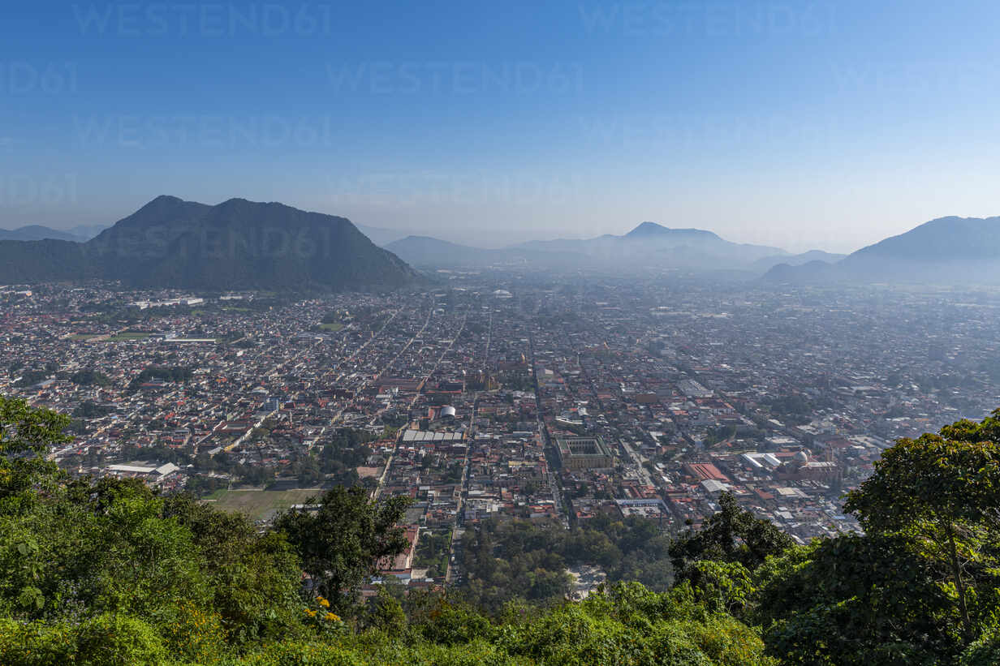
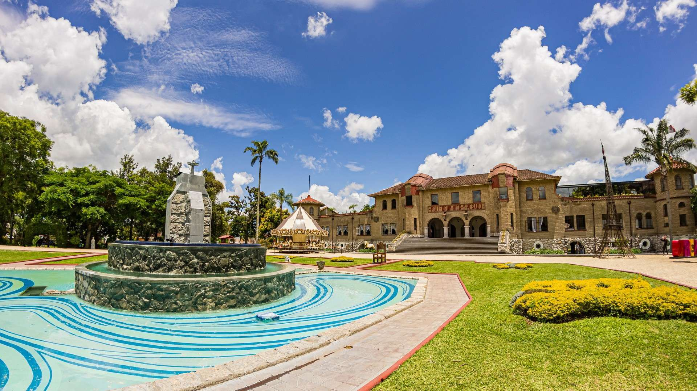
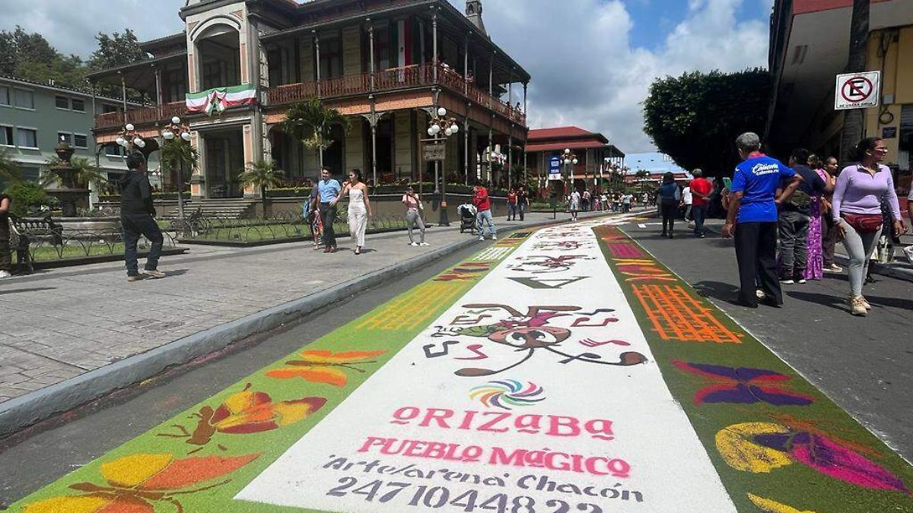

¿Te gustaría explorar un lugar lleno de encanto?
Orizaba ofrece paisajes impresionantes, recorridos históricos y actividades para todos los gustos.
 No te pierdas: Los miradores, el teleférico y los secretos del Centro Histórico.
Vive Orizaba a través de las experiencias de otros
Conoce las historias de viajeros como tú. Descubre consejos, anécdotas y recomendaciones únicas.
¡Inspírate! Comparte tu historia y ayuda a otros a descubrir este destino mágico.